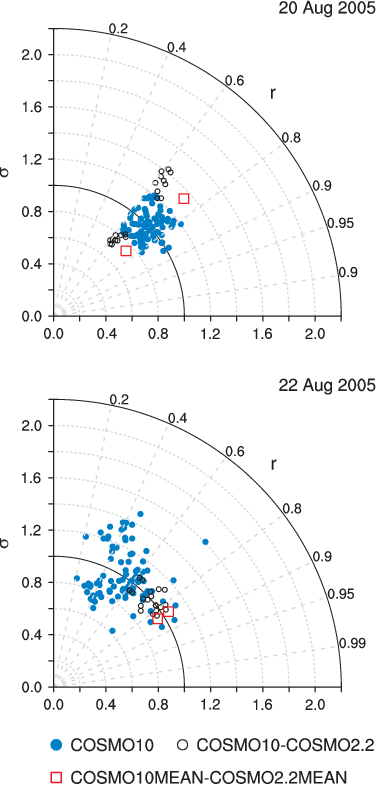

Taylor diagrams of daily precipitation on (top) August 20 and (bottom) August 22. A Taylor diagram compares a pair of integrations (m1,m2) on the basis of their spatial correlation r and of the ratio of their spatial standard deviations, σ = σm2/σm1. The azimuthal location of an entry in the Taylor diagram defines its correlation, while the radial distance gives σ. Blue dots show pairs drawn from the 10 km ensemble (90 pairs), while black circles show 10-2.2 km pairs driven by the same initial and boundary conditions (20 pairs). Red boxes indicate statistics from the comparison of the ensemble means (2 pairs). Pair (m2,m1) is the mirror of pair (m1,m2). On the first day (August 20), the correlation between a 2.2 km simulation (or ensemble mean) and its 10 km counterpart is smaller than between two 10 km members. The ratio σ is also smaller for the 10 km ensemble. On the third day of the integration (August 23), the correlations between corresponding 2.2 and 10 members are generally higher than between different 10 km simulations.
Heavy precipitation events over the European Alps are responsible for major floods and damage. For example, the total damage caused by a flood on the northern side of the Alps during August 2005 was estimated as 3.3 billion USD. This particluar event was ranked as the 5th most costly insurence loss globally in 2005 (after hurricanes Katrina, Rita, and Wilma and European winter storm Erwin). In this study, the potential benefits of using a cloud-resolving ensemble prediction system (EPS) over its driving lower resolution EPS is assessed.
Why do we care?
The development of accurate ensemble prediction systems (EPS) is key to reliable warnings and adequate response strategies for such heavy precipitation events. Accurate predictions of ensemble mean precipitation and exceedance probabilities for extreme values are needed for succesful warnings. It is generally accepted that cloud-resolving simulations yield more realistic precipitation patterns and that they are more skilful in cases of moist convection and/or over regions of complex topography. However, the achieved gain is often not significant in terms of statistical skill scores. For cloud-resolving simulations, in which initial errors grow very rapidly, the gain might actually best be reflected in an ensemble of simulations.
How do we approach this?
Ensemble members for the large-scale flow are provided by ECMWF's global model. High-resolution versions are obtained by dynamically downscaling a subset of these members to both 10 km and 2.2 km. Two ensembles (10 members each) with 10 km and 2.2 km grid spacing, respectively, are then contrasted. In contrast to the 10 km ensemble, the 2.2 km ensemble uses no convection parameterization and a better resolved topography. All runs are integrated over 3 days of heavy precipitation. Additional ensembles are generated to address the influence of initial versus lateral boundary conditions on ensemble spread.
What do we find?
The cloud-resolving EPS and the parameterized 10-km EPS are both very skilful at capturing the phase of heavy precipitation over central Switzerland, both in terms of means and exceedence probabilities. Except on the first day, the resolution-induced differences tend to be smaller than typical member-to-member variability. On this first integration day, August 20, the low-level jet is only tangent to the Alps such that small changes in topography (as obtained from higher resolution) have considerable impact on flow behavior and thus precipitation. Later on 21 and 22 August, a reduced sensitivity to numerical resolution results from a combination of the increased ensemble spread at larger lead times, the perpendicular orientation of the low-level jet to the Alps, the reduced role of moist convection, and the overall stronger moisture flux.
The spread due to inital and lateral boundary conditions also contributes to the different behavior on the first and third day. During the early stage, the ensemble spread due to different initial conditions is as large as the one due to different lateral boundary conditions. Later, the spread results mostly from the differences in the lateral boundary conditions.
{kind=link}